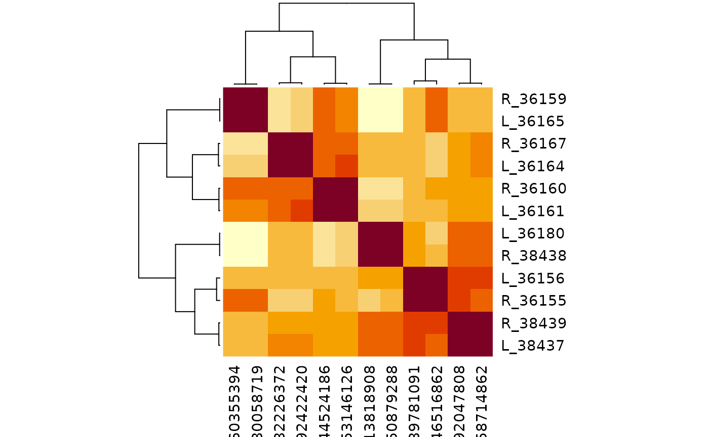
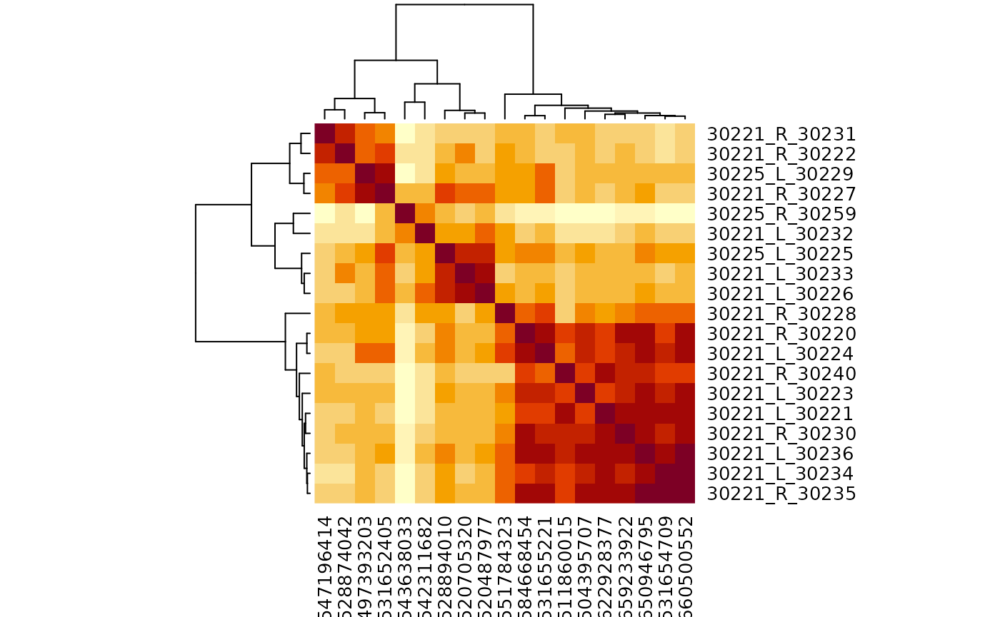

Connectivity Clustering with Predicted Groups
Source:vignettes/connectivity-clustering.Rmd
connectivity-clustering.RmdThis vignette clusters a set of related Aedes neurons by their
connectivity using coconatfly’s
cf_cosine_plot(). Cosine clustering compares neurons by the
partners they share, and those partners must first be grouped, so that
e.g. two neurons that each contact a different member of the same
partner cell type still count as similar.
In well annotated datasets partners are grouped by cell
type. Most aedes neurons do not yet have a type, so we
compare two alternatives:
-
group: the curated group (seeaedes_set_group()). -
pgroup: the predicted group fromaedes_predict_group(), which uses the first available of cell type, curatedgroupand NBLAST cluster.
The chunks below need FlyTable and CAVE access. They are evaluated when the pkgdown website is built; elsewhere saved results are shown instead (see Rerunning this vignette).
Quick start
Once register_aedes_coconat() has been called,
coconatfly metadata for aedes neurons includes a pgroup
column, so you can simply choose the grouping column:
cf_cosine_plot(cf_ids(aedes = "group:36155"), group = "group")
cf_cosine_plot(cf_ids(aedes = "group:36155"), group = "pgroup")Fetch the connectivity once
As an example we use the 12 untyped visual projection neurons in
group 36155. Rather than letting cf_cosine_plot() fetch
connectivity each time, we fetch a connection table once with
group = FALSE and then cluster it with different grouping
columns.
ids <- cf_ids(aedes = "group:36155")
cf_meta(ids) %>% select(id, serial_id, side, group, nblast_group)
#> id serial_id side group nblast_group
#> 1 648518347546516862 36155 R 36155 36155
#> 2 648518347589781091 36156 L 36155 36155
#> 3 648518347560355394 36159 R 36155 36155
#> 4 648518347544524186 36160 R 36155 36155
#> 5 648518347553146126 36161 L 36155 36155
#> 6 648518347592422420 36164 L 36155 36155
#> 7 648518347480058719 36165 L 36155 36155
#> 8 648518347482226372 36167 R 36155 36155
#> 9 648518347513818908 36180 L 36155 36155
#> 10 648518347558714862 38437 L 36155 36155
#> 11 648518347650879288 38438 R 36155 36155
#> 12 648518347592047808 38439 R 36155 36155
x <- multi_connection_table(ids, partners = c("in", "out"), threshold = 5,
group = FALSE)
#> Warning in fafbseg::cam_meta(ids = ids, ignore.case = ignore.case, fixed = fixed, : Dropping 1 rows containing duplicate root_ids!
#> You can inspect all 2 rows with duplicate ids by doing:
#> attr(df, 'duprows')
#> on your returned data frame (replacing df as appropriate).Partner neurons without a label in the chosen column cannot act as shared features and are dropped. We can check what fraction of the partner synapses each column covers:
cov <- x %>%
group_by(partners) %>%
summarise(type = sum(weight[!is.na(type)]) / sum(weight),
group = sum(weight[!is.na(group)]) / sum(weight),
pgroup = sum(weight[!is.na(pgroup)]) / sum(weight)) %>%
mutate(across(-partners, ~ round(.x, 3))) %>%
as.data.frame()
cov
#> partners type group pgroup
#> 1 inputs 0.002 0.161 0.161
#> 2 outputs 0.008 0.613 0.621Cell types cover under 1% of partner synapses, so
group = "type" is not useful here. Using
pgroup rather than group raises coverage of
output synapses from 61% to 62%. Input coverage stays low because most
of the input partners are not yet in FlyTable at all.
Cluster by curated group
cf_cosine_plot(x, group = "group", labRow = "{side}_{serial_id}")
#> Warning in coconat::partner_summary2adjacency_matrix(x[["outputs"]], inputcol =
#> "pre_key", : Dropping: 1092/1715 neurons representing 11475/29629 synapses due
#> to missing ids!
#> Warning in coconat::partner_summary2adjacency_matrix(x[["inputs"]], inputcol =
#> groupcol, : Dropping: 4259/4477 neurons representing 49907/59475 synapses due
#> to missing ids!Cluster by predicted group
cf_cosine_plot(x, group = "pgroup", labRow = "{side}_{serial_id}")
#> Warning in coconat::partner_summary2adjacency_matrix(x[["outputs"]], inputcol =
#> "pre_key", : Dropping: 1078/1715 neurons representing 11240/29629 synapses due
#> to missing ids!
#> Warning in coconat::partner_summary2adjacency_matrix(x[["inputs"]], inputcol =
#> groupcol, : Dropping: 4256/4477 neurons representing 49877/59475 synapses due
#> to missing ids!
At the time of writing (September 2026) both groupings split the 12
neurons into six left/right pairs, which is reassuring. With
pgroup the extra partner information gave a crisper result:
36155/36156 and 38437/38439 separated cleanly into two pairs rather than
forming one loosely resolved cluster of four.
How the predicted group is defined
aedes_predict_group() returns ids that all live in the
serial_id namespace, taking the first of these that is
available:
-
type: the smallest
serial_idamong neurons of that type (a trailing?is ignored, as are uninformative types listed inbadtypes). -
group: the curated
group. -
nblast_group: clusters of the form
CNNNNNorNNNNN, whereNNNNNis the smallestserial_idin the cluster (surrounding whitespace and a trailing?are ignored). Any other value is ignored, so a bad cluster can be struck out by prefixing it withX(e.g.XC12345) without deleting the information.
Neurons with none of these get NA and are dropped as
partners. With singletons = TRUE they instead fall back to
their own serial_id, i.e. a group of one, so that every
partner in FlyTable keeps its connectivity as a feature, behaving like
group = FALSE for that neuron. This is off by default
because a singleton partner can only be shared by neurons on the same
side of the brain, which tends to pull left/right homologues apart.
Because type-derived ids use the smallest serial_id
among the rows supplied, they can depend on which neurons are in the
table. Within one cf_cosine_plot() call the partner
metadata for each direction is fetched together, so the ids are
consistent where it matters.
You can also compute predicted groups yourself, e.g. to use a custom
badtypes list:
x$pgroup2 <- aedes_predict_group(x, badtypes = c(NA, "", "undefined"))
cf_cosine_plot(x, group = "pgroup2", labRow = "{side}_{serial_id}")
#> Warning in coconat::partner_summary2adjacency_matrix(x[["outputs"]], inputcol =
#> "pre_key", : Dropping: 1078/1715 neurons representing 11240/29629 synapses due
#> to missing ids!
#> Warning in coconat::partner_summary2adjacency_matrix(x[["inputs"]], inputcol =
#> groupcol, : Dropping: 4256/4477 neurons representing 49877/59475 synapses due
#> to missing ids!
Advanced: splitting ipsilateral and contralateral connectivity
Grouping partners by pgroup ignores which side of the
brain they are on, so a neuron that contacts the left-side members of a
partner group looks the same as one that contacts the right-side
members. We do not normally want to separate partners by side (after
all, this is precisely how connectivity clustering can identify
left-right homologues), but for bilateral neurons it may be useful to
distinguish ipsilateral from contralateral connectivity. This could be
important e.g. for bilateral inhibitory neurons involved in
steering.
To keep the side information, we can give each partner group two
labels, depending on whether the partner is on the same side of the
brain as the query neuron (NNNNNi, ipsilateral) or on the
opposite side (NNNNNc, contralateral).
As an example we use the 19 lateral horn local neurons (class
LHLN) in groups 30221 (16 bilateral, subclass
BR) and 30225 (3 unilateral, subclass IR).
These were originally annotated as two groups but do not split cleanly
along those lines. Connections among the query neurons themselves can
dominate the comparison when they are heavily interconnected, as these
are, so we drop those first.
ids_lh <- cf_ids(aedes = "group:30221|30225")
x_lh <- multi_connection_table(ids_lh, threshold = 5, group = FALSE)
qkeys <- keys(ids_lh)
qside <- cf_meta(ids_lh) %>% select(query_key = key, query_side = side)
x_lr <- x_lh %>%
# drop connections among the query neurons
filter(!(pre_key %in% qkeys & post_key %in% qkeys)) %>%
# the query neuron is postsynaptic for inputs, presynaptic for outputs
mutate(query_key = if_else(partners == "inputs", post_key, pre_key)) %>%
left_join(qside, by = "query_key") %>%
mutate(
lat = case_when(!side %in% c("L", "R") | !query_side %in% c("L", "R") ~ NA,
side == query_side ~ "i",
.default = "c"),
# keep NA so that unlabelled partners are dropped, not pooled
pgroup_lr = if_else(is.na(pgroup) | is.na(lat), NA, paste0(pgroup, lat)))
x_lr
#> # A tibble: 281 × 52
#> post_id pre_id weight supervoxel_id serial_id point_xyz side class subclass
#> <int64> <int64> <int> <chr> <chr> <chr> <chr> <chr> <chr>
#> 1 6e17 6e17 93 741706516442… 11451 17815,18… R cb_i… ALPN
#> 2 6e17 6e17 64 755076577165… 10959 27167.48… L cb_i… ALPN
#> 3 6e17 6e17 63 755076577164… 10957 27182.10… L cb_i… ALPN
#> 4 6e17 6e17 60 742410203885… 11419 17934,17… R cb_i… ALPN
#> 5 6e17 6e17 54 742410203885… 11419 17934,17… R cb_i… ALPN
#> 6 6e17 6e17 54 742410203885… 11419 17934,17… R cb_i… ALPN
#> 7 6e17 6e17 54 741706516442… 11451 17815,18… R cb_i… ALPN
#> 8 6e17 6e17 53 755076577165… 10959 27167.48… L cb_i… ALPN
#> 9 6e17 6e17 50 755076577165… 10959 27167.48… L cb_i… ALPN
#> 10 6e17 6e17 40 755076577165… 10959 27167.48… L cb_i… ALPN
#> # ℹ 271 more rows
#> # ℹ 43 more variables: type <chr>, group <chr>, nblast_group <chr>,
#> # notes <chr>, proofreader <chr>, annotator <chr>, lineage <chr>,
#> # neuropils <chr>, status <chr>, axon_tract <chr>,
#> # neurotransmitter_verified <chr>, neurotransmitter_verified_source <chr>,
#> # soma_xyz <chr>, nucleus_id <dbl>, birthtime <chr>, nerve <chr>,
#> # lrcid <chr>, synonyms <chr>, flywire_type <chr>, instance <chr>, …multi_connection_table(group = FALSE) returns one row
per connection between a query neuron and a partner, with the partner’s
metadata (including side and pgroup). The
partners column says whether the partner is an input or an
output, and therefore whether the query neuron is in
post_key or pre_key; we use that to look up
the query neuron’s soma side. Comparing the two sides gives an
i or c suffix for the partner’s
pgroup, so each partner group becomes two separate
features.
Partners with no pgroup or no L/R side must stay
NA, so that they are dropped like any other unlabelled
partner. Pasting a suffix onto NA would make a string such
as "NAc", merging every unlabelled partner into one fake
shared group that inflates similarity.
We then cluster on the new column, labelling each neuron with its curated group so we can see how the two groups mix:
cf_cosine_plot(x_lr, group = "pgroup_lr",
labRow = "{group}_{side}_{serial_id}")
#> Warning in coconat::partner_summary2adjacency_matrix(x[["outputs"]], inputcol =
#> "pre_key", : Dropping: 83/195 neurons representing 701/1828 synapses due to
#> missing ids!
#> Warning in coconat::partner_summary2adjacency_matrix(x[["inputs"]], inputcol =
#> groupcol, : Dropping: 27/86 neurons representing 200/1540 synapses due to
#> missing ids!
Note that “side” means soma side. For bilateral neurons, an
i partner shares the query neuron’s soma side; that says
nothing about where on the query neuron the synapse is. It is worth
checking how much of the connectivity the split actually affects:
lr_wt <- x_lr %>%
filter(!is.na(pgroup_lr)) %>%
count(partners, lat, wt = weight) %>%
as.data.frame()
lr_wt
#> partners lat n
#> 1 inputs c 21
#> 2 inputs i 1319
#> 3 outputs c 256
#> 4 outputs i 871At the time of writing (November 2026) only 277 of the 2467 synapses with labelled partners were contralateral, almost all of them outputs, so the split changes the clustering only modestly here.
Rerunning this vignette
The results above depend on the live FlyTable annotations and CAVE connectivity, so they will change as proofreading and annotation progress.
Website. The pkgdown GitHub Actions workflow has the necessary FlyTable and CAVE credentials and evaluates this vignette in full whenever the site is rebuilt and deploys it on every push to
main(pull requests also build the site, but do not deploy it). To refresh it without a push, trigger the workflow manually from the repository’s Actions tab or withgh workflow run pkgdown.yaml.-
Locally. With FlyTable and CAVE access set up, render the vignette with the live chunks enabled:
Sys.setenv(AEDES_LIVE_VIGNETTES = "true") rmarkdown::render("vignettes/connectivity-clustering.Rmd") Saved results. When not evaluated live (e.g. during
R CMD checkorvignette("connectivity-clustering")from an installed package) the saved figures invignettes/figures/are shown. To refresh them, also setAEDES_SAVE_VIGNETTE_FIGURES=truewhen rendering locally, then update the saved coverage and weight tables and the “at the time of writing” text to match.